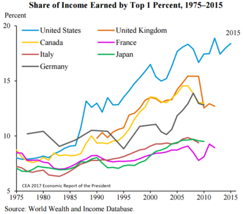
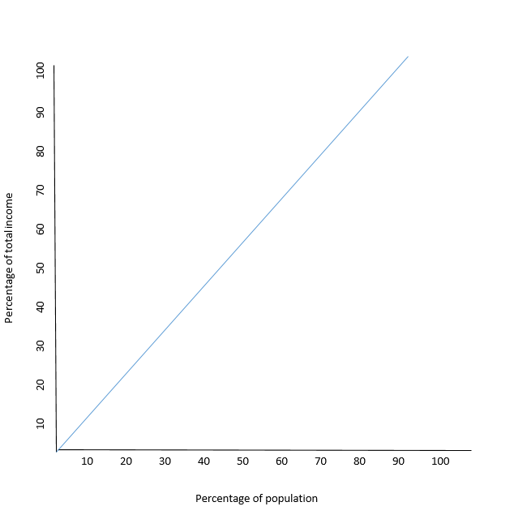
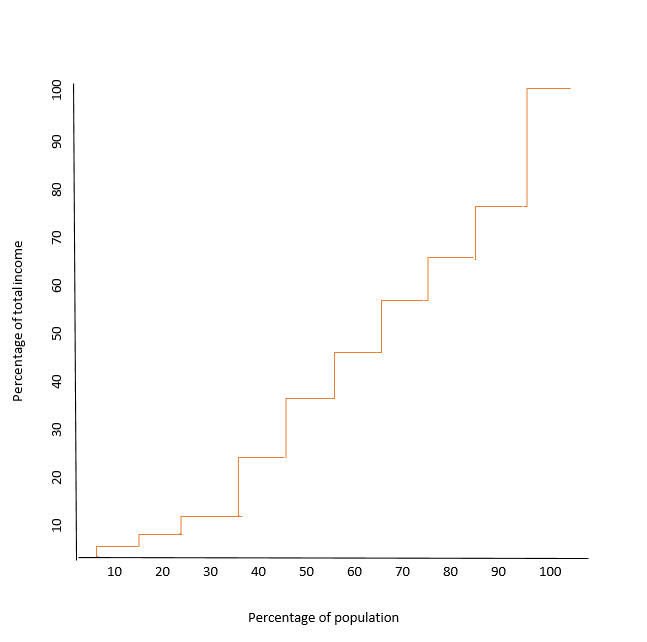
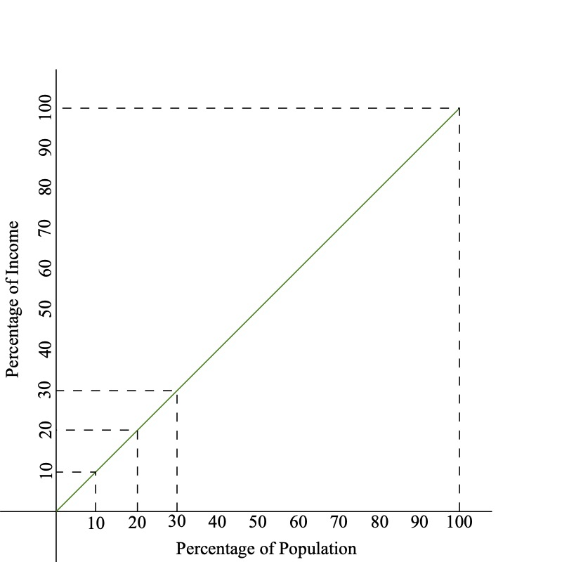
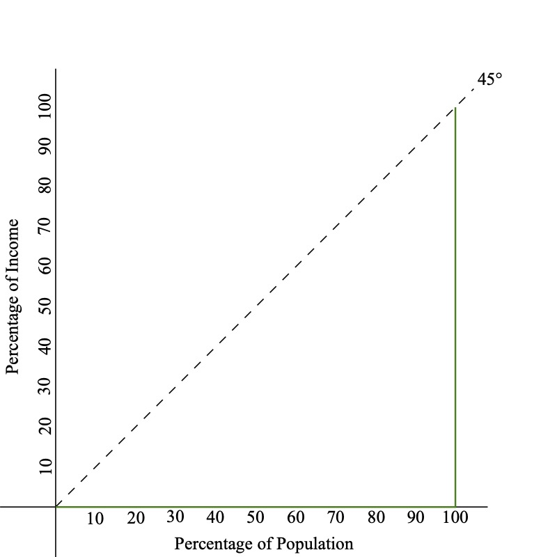
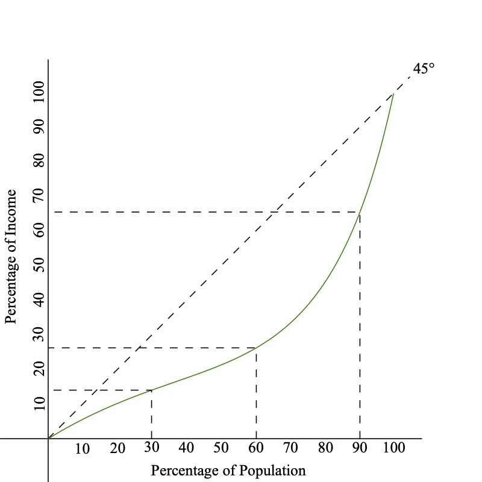
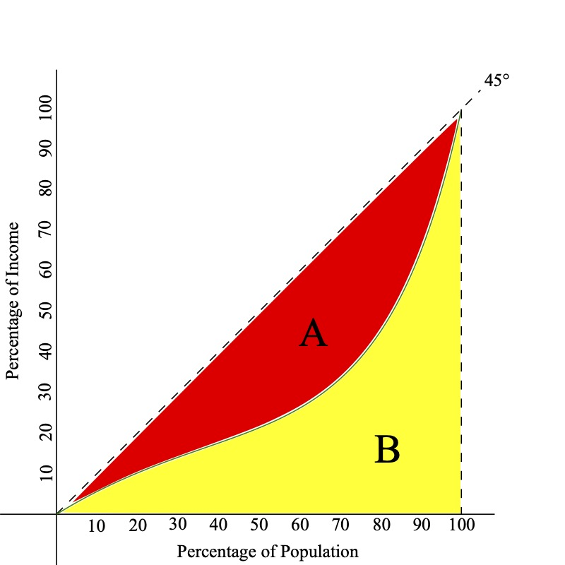
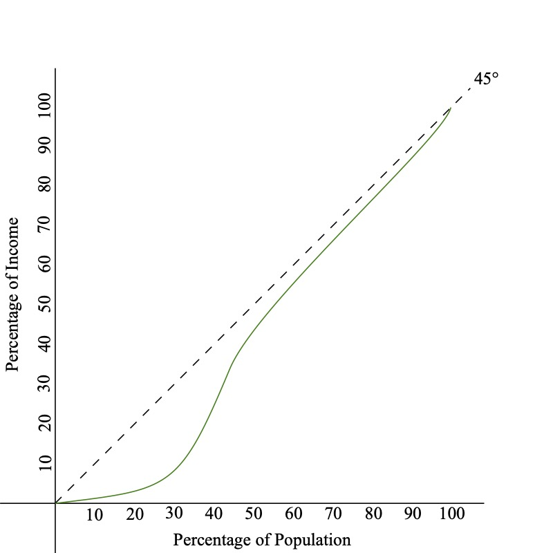
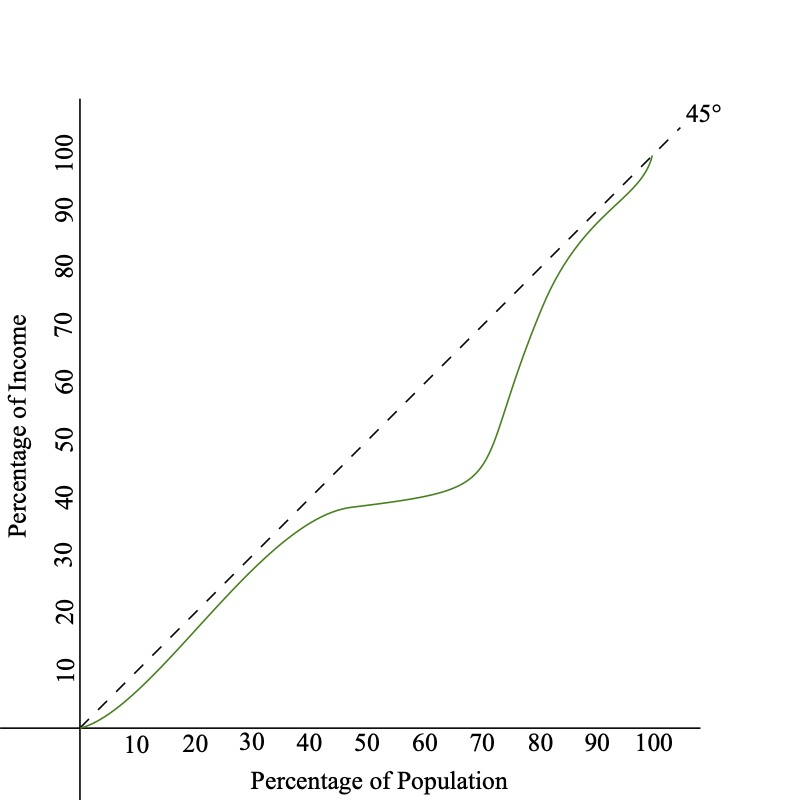

What is Poverty and Inequality
We have previously talked about Absolute Poverty previously
We can define it again as:
- Not being able to meet basic daily needs for food, shelter, clothing, etc.
Aside from poverty, we are interested in how income is distributed across individuals
Income Inequality
When thinking of comparing nations, we have measured incomes on national averages which has its own flaws
But how do we measure how income is distributed across individuals?
Income Inequality happens when income is unequal across households
- This creates an income distribution which we can later see where wealth is concentrated
Perfect wealth equality would be where everyone has an equal share of wealth
Income Inequality
Is income inequality necessarily bad?
- It depends
- Think of the theoretical outcomes that produce inequalities in societies
- Economists believe that some level of inequality will naturally exist
- Different skills will affect how productive someone may be
- In the most strict sense of economics, individual productions affect how much someone is paid
- Some inequality may be beneficial, it incetivizes individuals to increase their productivity/skill
- However, if inequality interferes with individual’s ability to perform basic functions, then we have a problem

Income Inequality
How should we measure inequality? Not easy to answer
There are 4 criteria to consider
Anonymity Priniciple:
Scale Independence Principle:
Population Indipendence Principle:
Transfer Principle:
Income Inequality
There are 4 criteria to consider
Anonymity Priniciple:: Measure of inequality should not depend on who has the higher income
Scale Independence Principle:
Population Indipendence Principle:
Transfer Principle:
Income Inequality
There are 4 criteria to consider
Anonymity Priniciple:
Scale Independence Principle: Measure of inequality should not depend on the size of the economy
Population Indipendence Principle:
Transfer Principle:
Income Inequality
There are 4 criteria to consider
Anonymity Priniciple:
Scale Independence Principle:
Population Indipendence Principle: Measure of inequality should not be based on the number of income recipients
Transfer Principle:
Income Inequality
There are 4 criteria to consider
Anonymity Priniciple:
Scale Independence Principle:
Population Indipendence Principle:
Transfer Principle: Holding all other incomes constant, if we transfer income from rich individuals to poor individuals, we should have more equal income distribution
Income Inequality Visualized
Let there be an economy with 10 people
- Incomes are: 10, 10, 10, 10, 10, 10, 10, 10, 10, 10
- Average Income: 10
- What percent of total income does the first person hold?
- \(10\%\)
- What percent of total income do the first 5 people hold?
- \(50\%\)
Perfect Income Equality

Income Inequality Visualized
Let’s change it up. There are still 10 people in the economy
- Incomes are: 5, 5, 5, 10, 10, 10, 10, 10, 10, 25
- Average Income: 10
- What percent of total income does the first person hold?
- \(5/100 \Rightarrow 5\%\)
- What percent of total income do the first 5 people hold?
- \(\dfrac{5 + 5 + 5 + 10 + 10}{100} \Rightarrow 35\%\)
- What percent of total income does the wealthiest person hold?
- \(25\%\)
Income Inequality

Lorenz Curves
Lorenz Curves are functions that show what percentage of wealth the bottom x% control
- Perfect equality is represented by a 45 degree line
- The Bottom 10% have 10% of the wealth
- The Bottom 20% have 20% of the wealth
- And so on
- Everyone has the same amount of wealth
Lorenz Curves - Perfect Equality

Lorenz Curves
On the other extreme, consider perfect inequality
- The Bottom 10% have 0% of the wealth
- The Bottom 20% have 0% of the wealth
- And so on
- Until we get to the last person, who has all of the nation’s wealth
Lorenz Curves - Perfect Inequality

Lorenz Curves
In reality, countries fall somewhere between the two extremes
- The extent of inequality can be (somewhat) represented by the area between the Lorenz Curve and the 45 degree line
Lorenz Curve - Realistic Example

Gini Coefficient
Graphs are a good visual representation of the wealth distribution
- Quantifying this would be very useful
The Gini Coefficient measures how far away a country is from perfect equality
We define it as:
\[ \text{GINI} = \dfrac{A}{A + B} \]
- The Gini Coefficient can range from 0 to 1
- A coefficient of 0 indicates perfect equality
- A coefficient of 1 indicates perfect inequality
Gini Coefficient Graph

\[ \text{GINI} = \dfrac{A}{A + B} \]
Gini Coefficient
It is a good metric, but does not provide all information about the distribution of wealth
Take for example these two diffferent countries:


Gini is approximately the same for both graphs
However income inequality affects two different segments of the population
First graph: Income inquality is prevalent for low income individuals
Second graph: middle income is carved out
Measuring Absolute Poverty
It is difficult to measure the (exact) Gini Coefficient we need to know incomes for everyone in a country
- The data, isn’t usually available for developing countries, so we need to use some coarser measure
- How can we get a good idea of the intensity of poverty in a particular region?
- We can use the Headcount Ratio Index, which is the percentage of people living below the poverty line
Headcount Ratio Index
Say that the absolute poverty line is $2
- Country A has 3 Million out of 10 Million at or below this poverty line
- The Headcount Ratio is \(H = 3/10 = 30\%\)
- But the Headcount Ratio Index tells us nothing about how the poor are distrubted beneath the poverty line
- Everyone living at $1.50 per day is much different than everyone living at $0.10 per day
Total Poverty Gap
We can instead look at the Total Poverty Gap (TPG)
- This measures the total amount of money needed to get everyone up to the absolute poverty line
\[ TPG = \sum_{i=1}^{H} (Y_{p} - Y_{i}) \]
- Where \(H\) is the total number of people below the poverty line
- \(Y_{p}\) is the poverty line (eg. $2 per day)
- \(Y_{i}\) is the income of the \(i^{th}\) person under the poverty line
Other Measures of Poverty Gaps
We can also have the Average Porvery Gap
\[ APG = \dfrac{TPG}{\text{Country Population}} \]
- This measures the amount each person would need to be given to everyone them out of poverty
And Average Income Shortfall
\[ AIS = \dfrac{TPG}{\text{# of Poor}} \]
- Measures the average amount poor people are below the poverty line
Other Measures of Poverty Gaps
Normalized Income Shortfall
\[ NIS = \dfrac{AIS}{\text{Poverty Line}} \]
- Measures the Average Income Shortfall as a percentage of the poverty line
Let’s look at some examples
Poverty Measure Examples
Let’s return to our tiny country of 10 people
- The poverty line is $1,000 per year
- There are three people living at or below the poverty line
- Person A makes $500
- Person B makes $800
- Person C makes $950
Find all of TPG, APG, AIS, NIS
\[ TPG = \sum_{i=1}^{H} (Y_{p} - Y_{i}) \;\; ; \;\; APG = \dfrac{TPG}{\text{Country Population}} \\ AIS = \dfrac{TPG}{\text{# of Poor}} \;\; ; \;\; NIS = \dfrac{AIS}{\text{Poverty Line}} \]
Poverty Measure Examples
Total Poverty Gap
\[\begin{align*} TPG &= (100 - 500) + (1000 - 800) + (1000 - 950) \\ &= 500 + 200 + 50 = 750 \end{align*}\]
Average Poverty Gap
\[ APG = \dfrac{TPG}{10} = \dfrac{750}{10} = 75 \]
Average Income Shortfall
\[ AIS = \dfrac{TPG}{\text{# of Poor}} = \dfrac{750}{3} = 250 \]
Normalized Income Shortfall
\[ NIS = \dfrac{AIS}{\text{Poverty Line}} = \dfrac{250}{1000} = 25\% \]